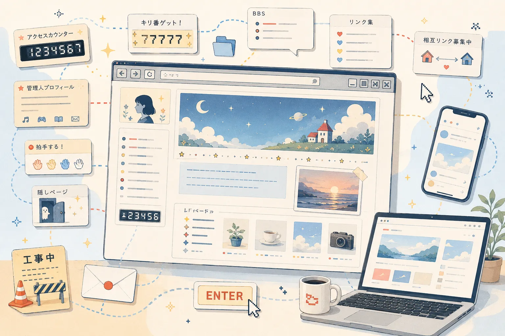
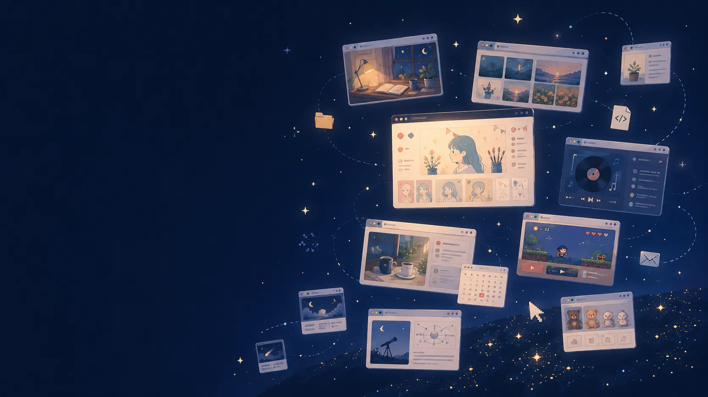

FREE WEBSITE HOSTING SINCE 1999
インターネットに、
自分の場所を
つくろう。
作品を並べる。
日記を書く。
ゲームを公開する。
好きなものについて、好きなだけ語る。
FC2ホームページなら、
自分だけのWebサイトを
無料で始められます。
- 0円から
- 商用利用OK
- HTML・FTP対応
- 独自ドメイン対応
Quick Facts
数字で見るFC2ホームページ
What Will You Publish?
あなたは、何を公開したいですか？
決まった使い方はありません。好きなものを、好きな形で置ける場所です。
作品を見せたい
イラスト、写真、漫画、音楽、ハンドメイド。
好きなことを書きたい
日記、考察、レビュー、旅行記、推し活。
ゲームやツールを公開したい
ブラウザゲーム、配布物、攻略情報、便利ツール。
活動を紹介したい
サークル、地域活動、学校、団体、イベント。
仕事やお店に使いたい
商品紹介、店舗案内、ポートフォリオ、商用サイト。
昔のサイトを残したい
過去のホームページ、資料、記録、Webアーカイブ。
Make It Yours
作り方も、育て方も、あなた次第。
自由に作れる
- HTML・CSSを自由に編集
- FTPアップロード
- ファイルマネージャー
- 独自ドメイン
- サブドメイン
すぐに始められる
- アカウント登録
- ブラウザ上でファイル管理
- ドラッグ＆ドロップ
- ページ編集
作品をたくさん置ける
- 画像
- 漫画
- イラスト
- 音楽
- 配布ファイル
サイトを育てられる
- アクセス解析
- カウンター
- ランキング
- 掲示板
- 拍手
- WordPress
Personal Web Showcase
みんなの「自分の場所」
昨日生まれたサイトも、20年以上続いているサイトも、同じインターネットの中にあります。
Re: Heisei Web
あの頃のWebを、
今の形でもう一度。
SNSがなかった頃、ホームページには「訪ねる楽しさ」がありました。
自分で作った入口。更新を待つ時間。偶然たどり着いた誰かの部屋。
その楽しさを、今のWebでも。
00012875

Start Guide
3ステップで、
あなたのホームページへ。
アカウントを作る
メールアドレスから無料で登録。
ホームページの名前を決める
好きなURLとサイト名を設定。
ファイルを公開する
ファイルマネージャーまたはFTPでアップロード。
Explore
今日、誰かが作ったホームページ。
青い糸の保管庫
編み図と制作途中の写真をまとめています。
夜更けのMIDI棚
短い曲と制作メモを置いている個人サイト。
小さな洞窟図書館
自作ゲームの攻略表と配布ファイル。
Your Web, Your Place
あなたの場所は、
あなたが作る。
作品も、日記も、誰にも説明できない趣味も。
流れて消えない、自分だけのホームページに残そう。
your-name.web.fc2.com
